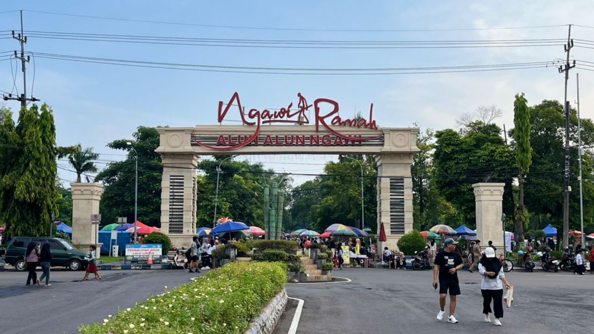
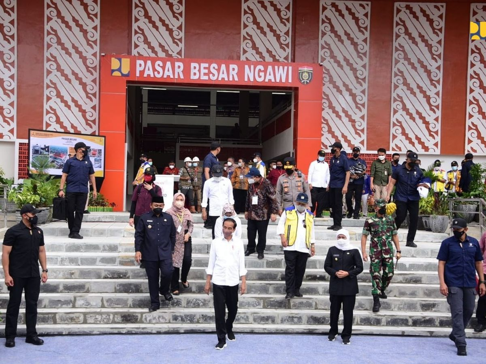
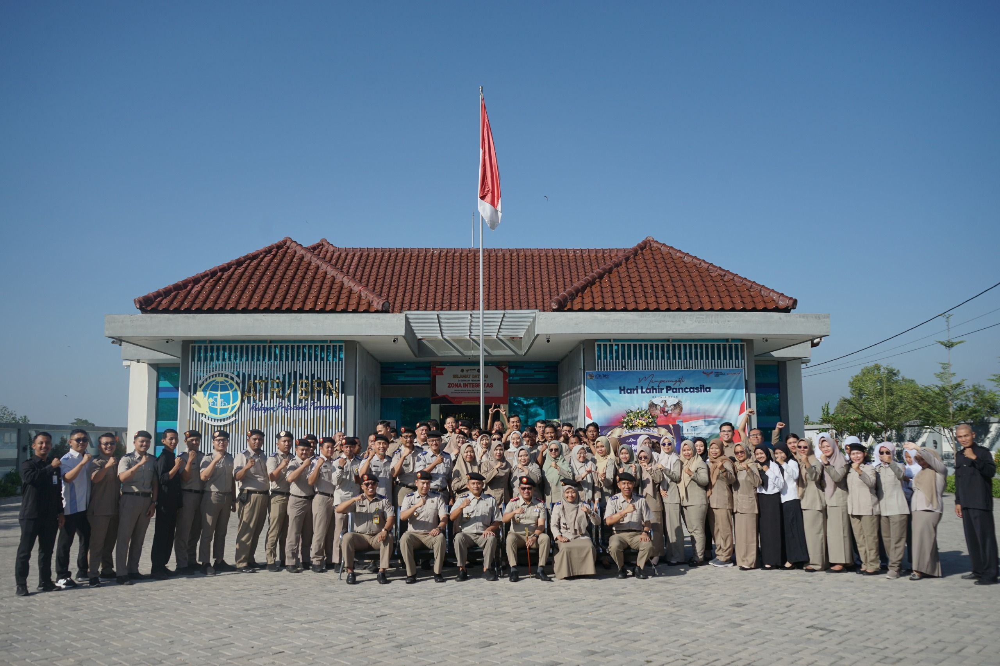
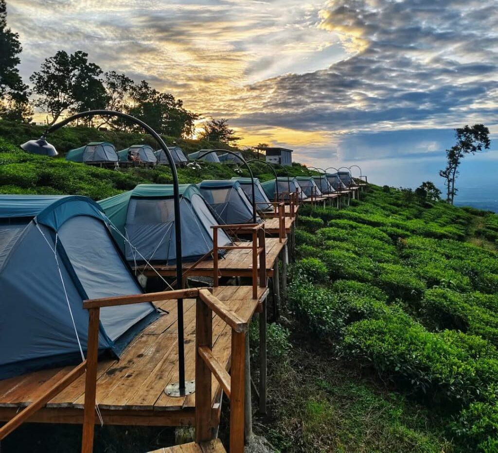
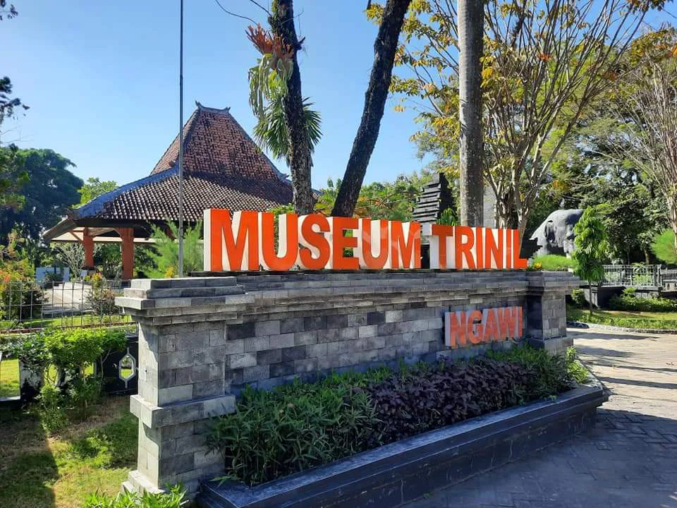
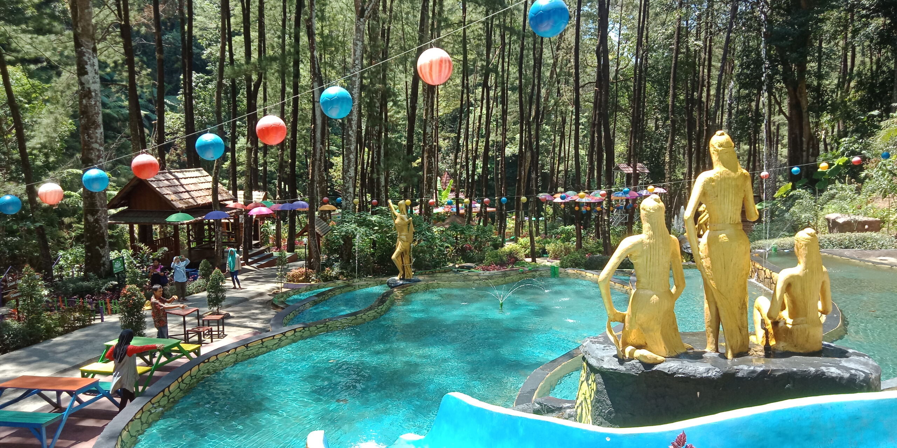
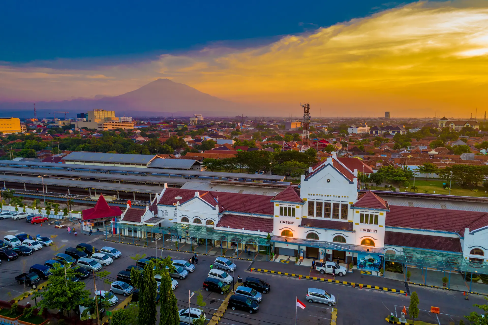

Galeri Kabupaten Ngawi
1. Tugu Kartonyono
Jantung kota dan landmark paling ikonik di Ngawi. Tugu yang dihiasi ornamen gading emas ini merupakan titik nol kilometer sekaligus simbol pusat pergerakan dan denyut nadi perkenomian warga.

2. Benteng Van Den Bosch
Ikon sejarah militer abad ke-19 peninggalan era Hindia Belanda. Benteng ini memiliki arsitektur unik karena sengaja dibangun lebih rendah dari permukaan tanah sekitar untuk strategi pertahanan, menjadikannya destinasi wisata sejarah yang memukau.

3. Alun-Alun Ngawi
Ruang terbuka hijau terbesar yang berada tepat di pusat pemerintahan. Berfungsi sebagai episentrum aktivitas sosial, budaya, olahraga, dan rekreasi yang menyatukan masyarakat dari berbagai penjuru kecamatan.

4. Pasar Besar Ngawi
Sentra perputaran ekonomi utama kabupaten dengan desain bangunan bergaya modern-tradisional. Pasar ini menjadi urat nadi perdagangan komoditas lokal dan titik kumpul utama bagi kegiatan jual-beli masyarakat.

5. Kantor ATR/BPN Ngawi
Pusat pelayanan administrasi pertanahan yang krusial bagi penataan ruang, legalisasi aset, dan pemetaan kadastral di seluruh wilayah kabupaten. Lokasi vital ini memastikan kepastian hukum batas-batas wilayah dan hak atas tanah masyarakat berjalan tertib.

6. Kebun Teh Jamus
Surga hijau di lereng utara Gunung Lawu. Kawasan agrowisata ini menawarkan hamparan perkebunan teh yang menyerupai candi (Borobudur Hills), lengkap dengan udara sejuk pegunungan dan sumber mata air murni.

7. Museum Trinil
Situs paleoantropologi bertaraf internasional yang terletak di bantaran Sungai Bengawan Solo. Tempat ini menyimpan jejak evolusi manusia purba Pithecanthropus erectus yang ditemukan oleh Eugene Dubois, menjadikannya aset edukasi dan sejarah dunia.

8. Srambang Park
Destinasi ekowisata perpaduan antara pesona air terjun alami dan rimbunnya hutan pinus. Kawasan ini ditata dengan pendekatan modern yang estetik, menjadikannya salah satu titik pariwisata alam terfavorit di Ngawi.
9. Masjid Agung Baiturrahman
Pusat kegiatan ibadah dan keagamaan terbesar di Ngawi yang berdiri megah di sisi barat Alun-Alun Merdeka. Arsitekturnya yang elegan dengan balutan warna putih menjadikannya poros spiritual masyarakat setempat.
10. Waduk Pondok
Infrastruktur bendungan buatan yang sangat vital untuk mendukung irigasi sawah-sawah di lumbung padi Ngawi. Selain fungsi irigasi, hamparan airnya yang luas juga menawarkan potensi wisata tirta dan lokasi memancing yang tenang.
11. Monumen Gubernur Soerjo
Situs bersejarah yang didedikasikan untuk mengenang pahlawan nasional sekaligus Gubernur pertama Jawa Timur, RM Ario Soerjo. Terletak di tengah kawasan hutan jati Kedunggalar yang rindang, monumen ini menjadi pengingat jejak patriotisme sekaligus area peristirahatan teduh bagi pelintas jalur utama Ngawi-Solo.

12. Stasiun Ngawi (Stasiun Paron)
Gerbang utama jalur transportasi Kereta Api yang menghubungkan Kabupaten Ngawi dengan berbagai kota besar melintasi Pulau Jawa. Stasiun peninggalan era kolonial yang kini bertransformasi modern ini memainkan peran vital dalam memfasilitasi mobilitas demografi dan kelancaran arus pergerakan masyarakat.